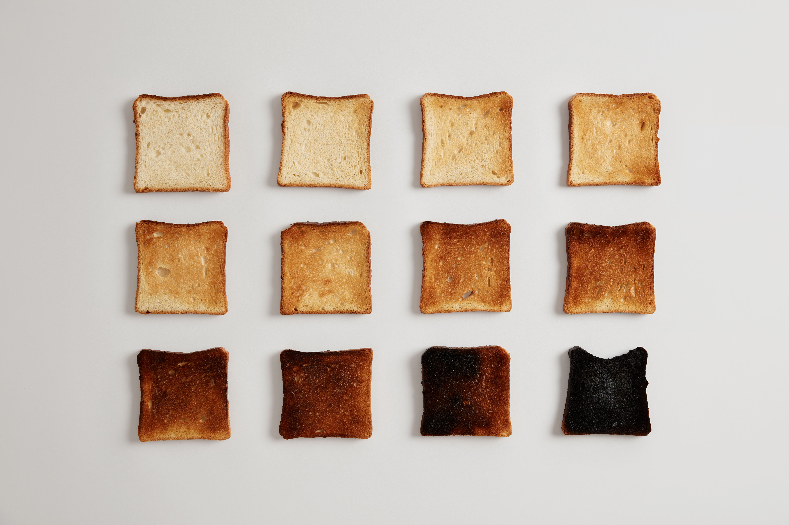
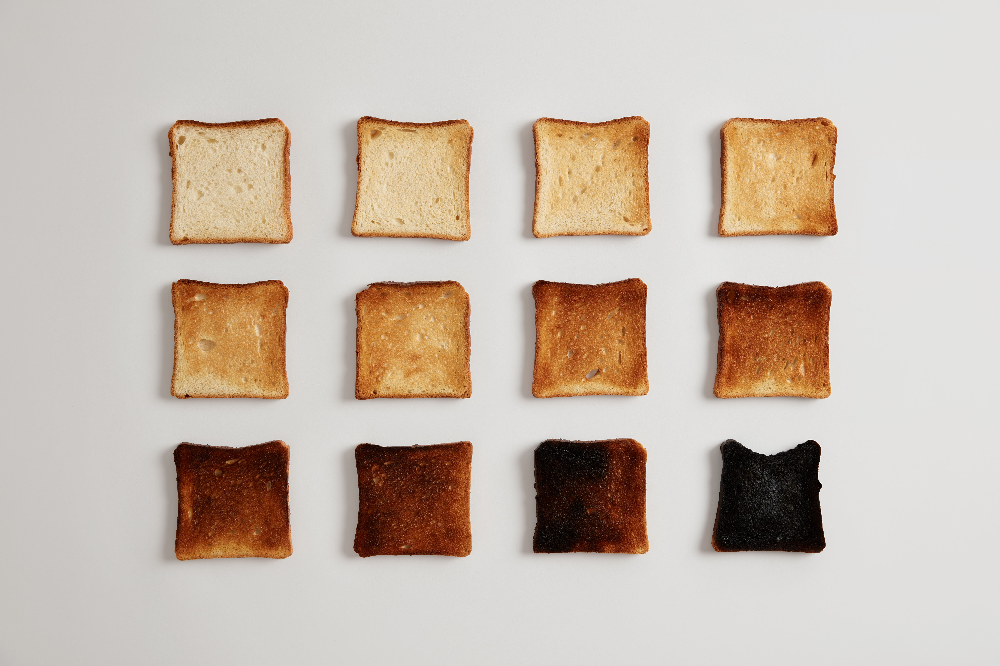

작가 wayhomestudio 출처 Freepik
토스트 굽는 시간을 조정합니다
토스트를 굽는 시간은 오븐,토스터가 어떤 것이냐에 따라, 또 각각의 설정과 빵의 두께에 따라 천차만별입니다. 정확히 모를때는 일반적으로 5분 정도 굽는 것을 권장해드리고 있습니다. 굽는 동안 토스트를 주시하면서 원하는 익힘 정도에 도달할 때까지 시간을 조절해주세요.

작가 wayhomestudio 출처 Freepik
토스트를 굽는 시간은 오븐,토스터가 어떤 것이냐에 따라, 또 각각의 설정과 빵의 두께에 따라 천차만별입니다. 정확히 모를때는 일반적으로 5분 정도 굽는 것을 권장해드리고 있습니다. 굽는 동안 토스트를 주시하면서 원하는 익힘 정도에 도달할 때까지 시간을 조절해주세요.
1. 일반 식빵을 상온에서 보관한 경우 2.5분~3.5분정도 구워주고 냉동 보관한 경우에는 3.5분~4.5분정도 구워줍니다.
2. 샌드위치용 식빵을 상온에서 보관한 경우 2.5분~3.5분정도 구워주고 냉동보관한 경우에는 3.5분~4.5분정도 구워줍니다.
3. 베이글을 상온에서 보관한 경우 4~5분정도 구워주고 냉동보관한 경우에는 6~8분정도 구워줍니다.